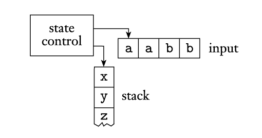

Pushdown Automata
Alyssa Lytle
February 26, 2026
Pushdown Automata
Pushdown Automata
DFAs/NFAs are computational models that recognize regular
languages.
Similarly pushdown automata are computational models that
recognize context-free languages.
Thinking of Finite Automata Differently
First, let’s think about DFAs/NFAs a little differently using this
representation:

- The control represents the states and transition function,
- the tape contains the input string,
- and the arrow represents the input head, pointing at the next input
symbol to be read.
Pushdown Automata
A pushdown automaton is similar in its design, but it includes a
stack where the automaton can write symbols to read back
later.
Every time a new symbol is written to the stack, the other symbols
are pushed down.

(Recall that adding an element to a stack is called pushing
an element and removing one is called popping!)
This design allows us to track things! You can recall that this was a
limitation for finite automata, and was the reason they couldn’t be used
to represent sets such as  .
.
Using a PDA to Recognize  (continued)
(continued)
Now, we will demonstrate how to formally define the PDA that
recognizes
Theorem
A language is context free if and only if some pushdown automaton
recognizes it.
Proof
(In one direction, just the construction)
Converting a CFG to a PDA
- Place the marker symbol $ and the start variable on the stack.
- Repeat the following steps:
- If the top element in the stack is a variable symbol (e.g.
 ), nondeterministically select one of
the rules for and substitute by applying this rule. Push that new
substution onto the stack.
), nondeterministically select one of
the rules for and substitute by applying this rule. Push that new
substution onto the stack.
- If the top element in the stack is a terminal symbol (e.g.
 ), read the next symbol from the input
to see if it matches . If they match, continue. Otherwise,
consider this a reject and try another “branch” of nondeterminism.
(Apply a different rule in the previous step.)
), read the next symbol from the input
to see if it matches . If they match, continue. Otherwise,
consider this a reject and try another “branch” of nondeterminism.
(Apply a different rule in the previous step.)
- If the top of the stack is $, this means the stack is empty, so
transition to the accept state. If the input has all be read, that means
that the string is accepted.